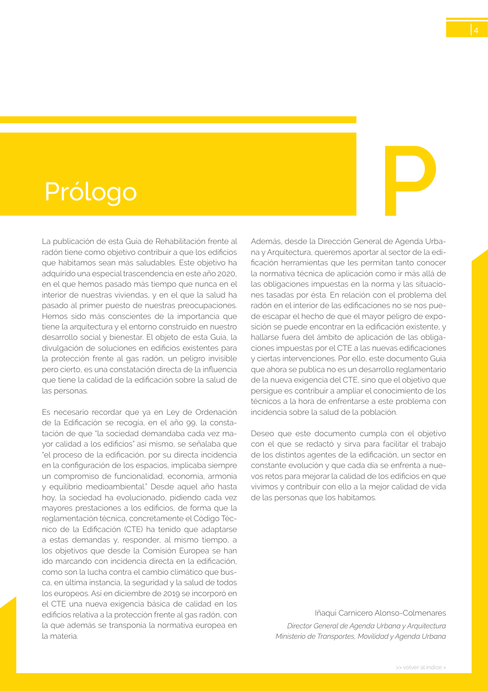

GUIA · Página 4 · versión sin-fecha
SHA256: 6765d0c34c51fbe193c3ed0c1378b710f98f086d16e2b68fc28ed36e143fdaea · página física 4 de 24 · métodos de encabezado
solo si están cotejados.
Formatos: Markdown · JSON de bloques · PDF p. 4 · imagen PNG
Prólogo P >> volver al índice > 4 Además, desde la Dirección General de Agenda Urba na y Arquitectura, queremos aportar al sector de la edi ficación herramientas que les permitan tanto conocer la normativa técnica de aplicación como ir más allá de las obligaciones impuestas en la norma y las situacio nes tasadas por ésta. En relación con el problema del radón en el interior de las edificaciones no se nos pue de escapar el hecho de que el mayor peligro de expo sición se puede encontrar en la edificación existente, y hallarse fuera del ámbito de aplicación de las obliga ciones impuestas por el CTE a las nuevas edificaciones y ciertas intervenciones. Por ello, este documento Guía que ahora se publica no es un desarrollo reglamentario de la nueva exigencia del CTE, sino que el objetivo que persigue es contribuir a ampliar el conocimiento de los técnicos a la hora de enfrentarse a este problema con incidencia sobre la salud de la población. Deseo que este documento cumpla con el objetivo con el que se redactó y sirva para facilitar el trabajo de los distintos agentes de la edificación, un sector en constante evolución y que cada día se enfrenta a nue vos retos para mejorar la calidad de los edificios en que vivimos y contribuir con ello a la mejor calidad de vida de las personas que los habitamos. Iñaqui Carnicero Alonso-Colmenares Director General de Agenda Urbana y Arquitectura Ministerio de Transportes, Movilidad y Agenda Urbana La publicación de esta Guía de Rehabilitación frente al radón tiene como objetivo contribuir a que los edificios que habitamos sean más saludables. Este objetivo ha adquirido una especial trascendencia en este año 2020, en el que hemos pasado más tiempo que nunca en el interior de nuestras viviendas, y en el que la salud ha pasado al primer puesto de nuestras preocupaciones. Hemos sido más conscientes de la importancia que tiene la arquitectura y el entorno construido en nuestro desarrollo social y bienestar. El objeto de esta Guía, la divulgación de soluciones en edificios existentes para la protección frente al gas radón, un peligro invisible pero cierto, es una constatación directa de la influencia que tiene la calidad de la edificación sobre la salud de las personas. Es necesario recordar que ya en Ley de Ordenación de la Edificación se recogía, en el año 99, la consta tación de que “la sociedad demandaba cada vez ma yor calidad a los edificios” así mismo, se señalaba que “el proceso de la edificación, por su directa incidencia en la configuración de los espacios, implicaba siempre un compromiso de funcionalidad, economía, armonía y equilibrio medioambiental.” Desde aquel año hasta hoy, la sociedad ha evolucionado, pidiendo cada vez mayores prestaciones a los edificios, de forma que la reglamentación técnica, concretamente el Código Téc nico de la Edificación (CTE) ha tenido que adaptarse a estas demandas y, responder, al mismo tiempo, a los objetivos que desde la Comisión Europea se han ido marcando con incidencia directa en la edificación, como son la lucha contra el cambio climático que bus ca, en última instancia, la seguridad y la salud de todos los europeos. Así en diciembre de 2019 se incorporó en el CTE una nueva exigencia básica de calidad en los edificios relativa a la protección frente al gas radón, con la que además se transponía la normativa europea en la materia.
